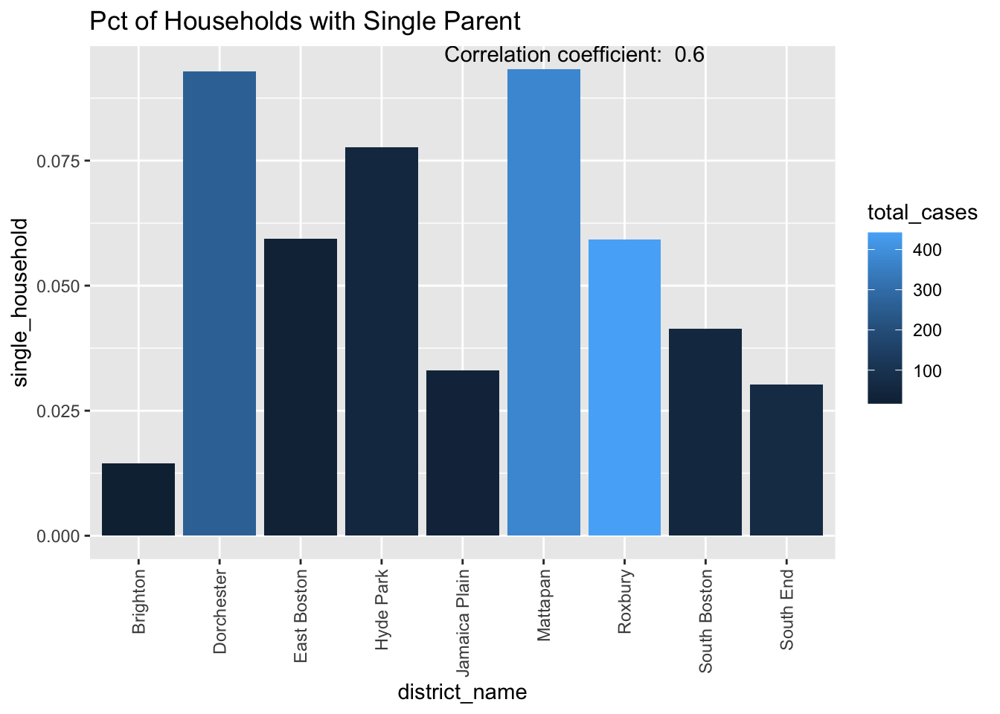
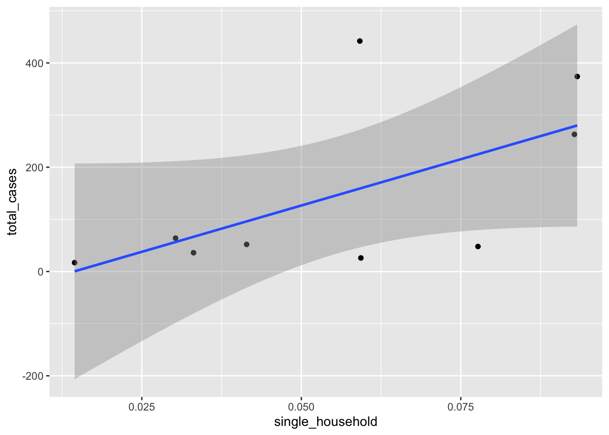

library(tidyverse)── Attaching core tidyverse packages ──────────────────────── tidyverse 2.0.0 ──
✔ dplyr 1.1.4 ✔ readr 2.1.5
✔ forcats 1.0.0 ✔ stringr 1.5.1
✔ ggplot2 3.4.4 ✔ tibble 3.2.1
✔ lubridate 1.9.3 ✔ tidyr 1.3.0
✔ purrr 1.0.2
── Conflicts ────────────────────────────────────────── tidyverse_conflicts() ──
✖ dplyr::filter() masks stats::filter()
✖ dplyr::lag() masks stats::lag()
ℹ Use the conflicted package (<http://conflicted.r-lib.org/>) to force all conflicts to become errorslibrary(sandwich)
library(lmtest)Loading required package: zoo
Attaching package: 'zoo'
The following objects are masked from 'package:base':
as.Date, as.Date.numericlibrary(car)Loading required package: carData
Attaching package: 'car'
The following object is masked from 'package:dplyr':
recode
The following object is masked from 'package:purrr':
somefinal_df<-read.csv('census_dat.csv')
#shows correlation between income and total cases for each district. Lower income => more cases
#income plot
correlation_coef <- final_df%>%
group_by(district_name)%>%
summarise(medincome_mean= mean(medincome), total_cases = sum(!duplicated(incident_num))) %>%
summarise(correlation_coef = round(cor(total_cases, medincome_mean),2))
final_df%>%
group_by(district_name)%>%
select(year, district_name, medincome, incident_num)%>%
summarise(medincome_mean= mean(medincome), total_cases = sum(!duplicated(incident_num))) %>%
distinct()%>%
ggplot(aes(district_name, medincome_mean,fill = total_cases))+
geom_bar(stat= 'identity')+
theme(axis.text.x = element_text(angle = 90, vjust = 0.5, hjust=1))+
labs(y = 'Avg median income',title = 'Avg Median Income and Total Cases Over All Years')+
annotate("text", x = Inf, y = Inf, label = paste("Correlation coefficient: ", correlation_coef), hjust = 1.5, vjust = 1)
#scatterplot with line of best fit
final_df%>%
group_by(district_name)%>%
select(year, district_name, medincome, incident_num)%>%
summarise(medincome_mean= mean(medincome), total_cases = sum(!duplicated(incident_num))) %>%
distinct()%>%
ggplot(aes( medincome_mean,total_cases))+
geom_point()+
geom_smooth(method ='lm')+
labs(y = 'Avg median income',title = 'Avg Median Income and Total Cases Over All Years')+
annotate("text", x = Inf, y = Inf, label = paste("Correlation coefficient: ", correlation_coef), hjust = 1.5, vjust = 1)`geom_smooth()` using formula = 'y ~ x'
#Highschool plot
final_df%>%
group_by(district_name)%>%
select(year, district_name, has_highschool_diploma, Total.,incident_num)%>%
summarise(district_name=district_name,high_school_pct= mean(has_highschool_diploma/Total.), total_cases = sum(!duplicated(incident_num))) %>%
distinct()%>%
ggplot(aes(district_name, high_school_pct,fill = total_cases))+
geom_bar(stat= 'identity')+
theme(axis.text.x = element_text(angle = 90, vjust = 0.5, hjust=1))+
labs(y = 'Pct of population with high school diploma',title = 'Avg Populaion with HS Diploma and Total Cases Over All Years')Warning: Returning more (or less) than 1 row per `summarise()` group was deprecated in
dplyr 1.1.0.
ℹ Please use `reframe()` instead.
ℹ When switching from `summarise()` to `reframe()`, remember that `reframe()`
always returns an ungrouped data frame and adjust accordingly.`summarise()` has grouped output by 'district_name'. You can override using the
`.groups` argument.correlation_coef <- final_df%>%
group_by(district_name)%>%
summarise(employment_pct= mean(employment_status/Total.), total_cases = sum(!duplicated(incident_num)))%>%
summarise(correlation_coef = round(cor(total_cases, employment_pct),2))
#employment plot
final_df%>%
group_by(district_name)%>%
summarise(employment_pct= mean(employment_status/Total.), total_cases = sum(!duplicated(incident_num))) %>%
ggplot(aes(district_name, employment_pct,fill = total_cases))+
geom_bar(stat= 'identity')+
theme(axis.text.x = element_text(angle = 90, vjust = 0.5, hjust=1))+
labs(y = 'Pct of population employed',title = 'Avg Employment pct and Total Cases Over All Years')+
annotate("text", x = Inf, y = Inf, label = paste("Correlation coefficient: ", correlation_coef), hjust = 1.5, vjust = 1)#total cases for districts plot
final_df%>%
group_by(district_name)%>%
summarise(total_cases = sum(!duplicated(incident_num))) %>%
ggplot(aes(district_name,total_cases))+
geom_bar(stat= 'identity')+
theme(axis.text.x = element_text(angle = 90, vjust = 0.5, hjust=1))+
labs(title = 'Total Cases by District')
#single parent household plot
correlation_coef <- final_df%>%
group_by(district_name)%>%
summarise(single_household = mean(single_parent_household_under_18/ Total.),total_cases = sum(!duplicated(incident_num))) %>%
summarise(correlation_coef = round(cor(single_household, total_cases),2))
final_df%>%
group_by(district_name)%>%
summarise(single_household = mean(single_parent_household_under_18/ Total.),total_cases = sum(!duplicated(incident_num))) %>%
ggplot(aes(district_name,single_household, fill = total_cases))+
geom_bar(stat= 'identity')+
theme(axis.text.x = element_text(angle = 90, vjust = 0.5, hjust=1))+
labs(title = 'Pct of Households with Single Parent')+
annotate("text", x = Inf, y = Inf, label = paste("Correlation coefficient: ", correlation_coef), hjust = 1.5, vjust = 1)
#poverty level plot
final_df%>%
group_by(district_name)%>%
summarise(pct_below_poverty_level= mean(pct_below_poverty_level/Total.), total_cases = sum(!duplicated(incident_num))) %>%
ggplot(aes(district_name, pct_below_poverty_level,fill = total_cases))+
geom_bar(stat='identity')+
theme(axis.text.x = element_text(angle = 90, vjust = 0.5, hjust=1))+
labs(y = 'Avg pct below poverty level ',title = 'Avg pct below poverty level over All Years')
lm_dat<-final_df%>%
group_by(district_name, year)%>%
summarise(no_english_pct = mean(no_english/Total.), black_pct =mean(Black_or_African_American_alone/Total.),
pct_below_poverty_level=mean(pct_below_poverty_level/Total.),medincome_mean= mean(medincome),
mean_high_school_pct =mean(has_highschool_diploma/Total.), employment_pct = mean(employment_status/Total.),
total_cases = sum(!duplicated(incident_num)),single_household = mean(single_parent_household_under_18/ Total.))`summarise()` has grouped output by 'district_name'. You can override using the
`.groups` argument.ols<-lm(total_cases~ district_name+ medincome_mean+ pct_below_poverty_level+employment_pct, data = lm_dat)
coeftest(ols, vcov. = vcovHC)
t test of coefficients:
Estimate Std. Error t value Pr(>|t|)
(Intercept) 1.4734e+01 1.6024e+01 0.9195 0.3627337
district_nameDorchester 2.8293e+01 1.1878e+01 2.3820 0.0215058 *
district_nameEast Boston 1.9820e-01 3.6226e+00 0.0547 0.9566115
district_nameJamaica Plain 1.5009e+01 3.6411e+00 4.1220 0.0001593 ***
district_nameMattapan 4.5180e+01 4.1929e+00 10.7754 4.760e-14 ***
district_nameRoxbury 5.4235e+01 8.9295e+00 6.0737 2.427e-07 ***
district_nameSouth Boston 7.6087e+00 3.3917e+00 2.2434 0.0298422 *
district_nameSouth End 5.7032e+00 4.6210e+00 1.2342 0.2235374
medincome_mean -1.4277e-04 1.3087e-04 -1.0909 0.2811044
pct_below_poverty_level -4.8695e+01 7.1871e+01 -0.6775 0.5015332
employment_pct 6.7078e+00 2.8639e+01 0.2342 0.8158760
---
Signif. codes: 0 '***' 0.001 '**' 0.01 '*' 0.05 '.' 0.1 ' ' 1summary(ols) #92 adjusted Rsquared good for forecasting
Call:
lm(formula = total_cases ~ district_name + medincome_mean + pct_below_poverty_level +
employment_pct, data = lm_dat)
Residuals:
Min 1Q Median 3Q Max
-15.8233 -2.1011 0.0317 2.3574 13.0355
Coefficients:
Estimate Std. Error t value Pr(>|t|)
(Intercept) 1.473e+01 2.270e+01 0.649 0.51964
district_nameDorchester 2.829e+01 1.525e+01 1.855 0.07015 .
district_nameEast Boston 1.982e-01 5.233e+00 0.038 0.96996
district_nameJamaica Plain 1.501e+01 4.385e+00 3.423 0.00133 **
district_nameMattapan 4.518e+01 7.322e+00 6.171 1.74e-07 ***
district_nameRoxbury 5.423e+01 1.176e+01 4.610 3.33e-05 ***
district_nameSouth Boston 7.609e+00 4.551e+00 1.672 0.10148
district_nameSouth End 5.703e+00 6.409e+00 0.890 0.37825
medincome_mean -1.428e-04 1.350e-04 -1.057 0.29596
pct_below_poverty_level -4.870e+01 8.090e+01 -0.602 0.55026
employment_pct 6.708e+00 3.390e+01 0.198 0.84403
---
Signif. codes: 0 '***' 0.001 '**' 0.01 '*' 0.05 '.' 0.1 ' ' 1
Residual standard error: 5.727 on 45 degrees of freedom
Multiple R-squared: 0.9413, Adjusted R-squared: 0.9283
F-statistic: 72.22 on 10 and 45 DF, p-value: < 2.2e-16vif(ols) GVIF Df GVIF^(1/(2*Df))
district_name 456.11629 7 1.548581
medincome_mean 12.73971 1 3.569273
pct_below_poverty_level 29.73695 1 5.453160
employment_pct 124.24004 1 11.146302#interpretation: where you live is the best predictor of cases as shown by total cases by locations graph, p-values are high for other variables indicates multicollinearity
#vif, anything above 5 high collinearity, below 1 no collinearity, above 1 medium collinearity
ols<-lm(total_cases~medincome_mean+employment_pct+single_household+pct_below_poverty_level, data = lm_dat)
coeftest(ols, vcov. = vcovHC)
t test of coefficients:
Estimate Std. Error t value Pr(>|t|)
(Intercept) 2.5255e+01 1.4400e+01 1.7538 0.08547 .
medincome_mean 4.2569e-04 2.0927e-04 2.0342 0.04715 *
employment_pct -1.6157e+02 3.5390e+01 -4.5654 3.175e-05 ***
single_household 5.6747e+02 7.5222e+01 7.5440 7.546e-10 ***
pct_below_poverty_level 2.4853e+02 1.5053e+02 1.6510 0.10488
---
Signif. codes: 0 '***' 0.001 '**' 0.01 '*' 0.05 '.' 0.1 ' ' 1summary(ols)
Call:
lm(formula = total_cases ~ medincome_mean + employment_pct +
single_household + pct_below_poverty_level, data = lm_dat)
Residuals:
Min 1Q Median 3Q Max
-26.8559 -7.6095 -0.6758 8.4018 27.7319
Coefficients:
Estimate Std. Error t value Pr(>|t|)
(Intercept) 2.525e+01 1.656e+01 1.525 0.133476
medincome_mean 4.257e-04 2.507e-04 1.698 0.095639 .
employment_pct -1.616e+02 3.909e+01 -4.133 0.000133 ***
single_household 5.675e+02 9.411e+01 6.030 1.84e-07 ***
pct_below_poverty_level 2.485e+02 1.692e+02 1.469 0.148053
---
Signif. codes: 0 '***' 0.001 '**' 0.01 '*' 0.05 '.' 0.1 ' ' 1
Residual standard error: 13.89 on 51 degrees of freedom
Multiple R-squared: 0.6091, Adjusted R-squared: 0.5785
F-statistic: 19.87 on 4 and 51 DF, p-value: 6.54e-10vif(ols) medincome_mean employment_pct single_household
7.471888 28.102173 4.273531
pct_below_poverty_level
22.126258 #interpretation these variables are highly collinear, signs of the coefficients do not make sense
#however as single households increases, cases increas,
#as employment pct increases, cases decrease
#check signs of estimates
#check these plots for residuals, QQ, outliers
plot(ols)


logit_dat<-final_df%>%
group_by(district_name, year,victim_gender)%>%
summarise(victim_gender =victim_gender, no_english_pct = mean(no_english/Total.), black_pct =mean(Black_or_African_American_alone/Total.),
pct_below_poverty_level=mean(pct_below_poverty_level/Total.),medincome_mean= mean(medincome),
mean_high_school_pct =mean(has_highschool_diploma/Total.), employment_pct = mean(employment_status/Total.),
total_cases = sum(!duplicated(incident_num)),single_household = mean(single_parent_household_under_18/ Total.))%>%
distinct()Warning: Returning more (or less) than 1 row per `summarise()` group was deprecated in
dplyr 1.1.0.
ℹ Please use `reframe()` instead.
ℹ When switching from `summarise()` to `reframe()`, remember that `reframe()`
always returns an ungrouped data frame and adjust accordingly.`summarise()` has grouped output by 'district_name', 'year', 'victim_gender'.
You can override using the `.groups` argument.#logistic regression to predict victims gender, residuals highly heteroskedastic,
logit <- glm(factor(victim_gender) ~ employment_pct+ pct_below_poverty_level+mean_high_school_pct+ medincome_mean, data = logit_dat, family = binomial)
coeftest(logit, vcov.=vcovHC)#heteroskedastic standard errors
z test of coefficients:
Estimate Std. Error z value Pr(>|z|)
(Intercept) 2.6341e+00 2.3046e+00 1.1430 0.2530563
employment_pct -1.5802e+01 9.0041e+00 -1.7550 0.0792559 .
pct_below_poverty_level 9.8619e+01 2.9291e+01 3.3668 0.0007604 ***
mean_high_school_pct -3.0802e+01 2.3831e+01 -1.2925 0.1961900
medincome_mean 3.5031e-05 3.9856e-05 0.8789 0.3794428
---
Signif. codes: 0 '***' 0.001 '**' 0.01 '*' 0.05 '.' 0.1 ' ' 1summary(logit)#homoskedasitic standard erros formula, pvalues much higher
Call:
glm(formula = factor(victim_gender) ~ employment_pct + pct_below_poverty_level +
mean_high_school_pct + medincome_mean, family = binomial,
data = logit_dat)
Coefficients:
Estimate Std. Error z value Pr(>|z|)
(Intercept) 2.634e+00 7.619e+00 0.346 0.730
employment_pct -1.580e+01 1.350e+01 -1.171 0.242
pct_below_poverty_level 9.862e+01 7.216e+01 1.367 0.172
mean_high_school_pct -3.080e+01 2.901e+01 -1.062 0.288
medincome_mean 3.503e-05 7.658e-05 0.457 0.647
(Dispersion parameter for binomial family taken to be 1)
Null deviance: 19.485 on 96 degrees of freedom
Residual deviance: 14.722 on 92 degrees of freedom
AIC: 24.722
Number of Fisher Scoring iterations: 8